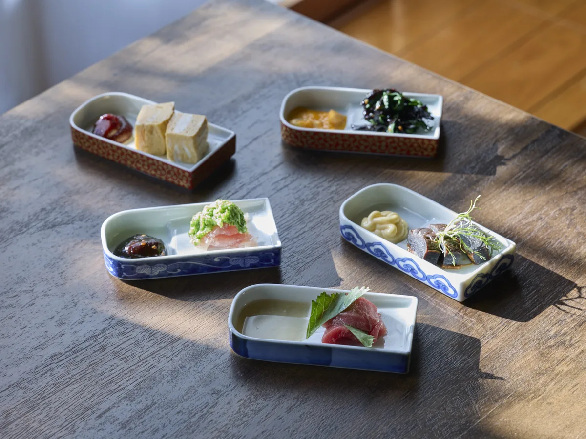
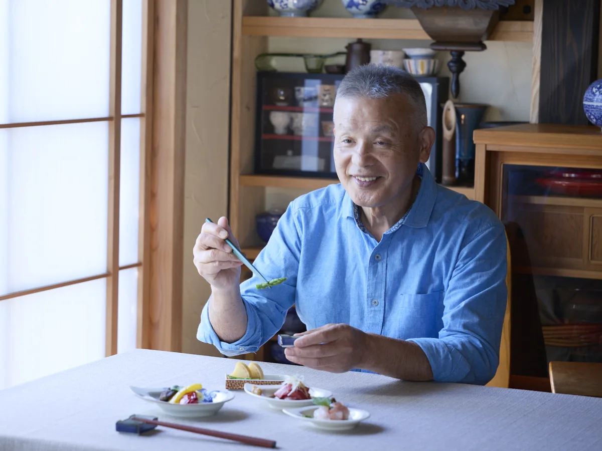

其の五
寿司千代口・オイル千代口とのしつらえ
あしらいで愉しむ季づき

SETTING
しつらえのご紹介
丘と海のある、小さな千代口。なにをのせましょうか。
柚子胡椒、塩とオリーブオイル、いつもの醤油……。
ひと皿のわきで迷う、遊びごころの食卓。
PRODUCT
商品のご紹介
一段高い「丘」と、低い「海」をもつ千代口。寿司千代口は洗練された印象を、オイル千代口は柔らかな印象を感じられます。箸置きにもなる小さな寿司千代口も添えました。醤油やオイルに限らず、なんでも遊べる食卓の華です。
番号を押すと、うつわの説明が変わります
寿司千代口
染錦金蛸唐草
一段高い「丘」と、低い「海」をもつ長方形の千代口。赤絵に金を重ねた蛸唐草で、ひとつ置くだけで食卓が華やぎます。
- 電子レンジ
- ？ 確認中
- 食洗機
- ？ 確認中
オイル千代口(小)
染付つたぶどう
大と同じ蔦葡萄の柄の、小さなオイル千代口。ひとり分のつけだれに、ちょうどよい大きさです。
- 電子レンジ
- ○ お使いいただけます
- 食洗機
- ○ お使いいただけます
オイル千代口(大)
染付つたぶどう
一段高い「丘」と、低い「海」をもつオイル千代口。蔦と葡萄を呉須で描き、オイルと塩を一緒に添えられます。
- 電子レンジ
- ○ お使いいただけます
- 食洗機
- ○ お使いいただけます
箸千代口
染付呉須巻縁錆 40×62×H15mm
縁に錆、胴に呉須の線を巻いた小さな千代口。箸置きとして使えるほか、薬味や塩をひとつまみ添えるうつわにもなります。
- 電子レンジ
- ○ お使いいただけます
- 食洗機
- ○ お使いいただけます
オイル千代口（特小）
染付ぶどう
いちばん小さなオイル千代口。葡萄の柄で、塩やスパイスをひとつまみ添えるのに。
- 電子レンジ
- ○ お使いいただけます
- 食洗機
- ○ お使いいただけます

VARIATION
寿司千代口の五柄
寿司千代口には、五つの柄があります。染錦金蛸唐草、染付濃唐草、染付呉須巻、染付瑞雲、染錦牡丹絵。しつらえには、染錦金蛸唐草が入ります。

MOMENTS
愉しみ（季づき）方
小さなうつわほど、遊べます。丘には季節のひと品を、海には醤油やオイルを。箸置きに、薬味入れに、アクセサリーや鍵の置き場所に。食卓の外でも活躍します。
季節の愉しみ方
- 春
- 木の芽味噌や、桜の塩漬けを。
- 夏
- オリーブオイルと塩で、冷やしたトマトを。
- 秋
- すだちと醤油で、焼いたきのこを。
- 冬
- 柚子胡椒や、もみじおろしを。
商品一覧
商品の内訳（5点）
- 寿司千代口 染錦金蛸唐草
- オイル千代口(小) 染付つたぶどう
- オイル千代口(大) 染付つたぶどう
- 箸千代口 染付呉須巻縁錆
- オイル千代口（特小） 染付ぶどう
寿司千代口 5柄セット／単品
寿司千代口：染錦金蛸唐草・染付濃唐草・染付呉須巻・染付瑞雲・染錦牡丹絵
お手入れの仕方
○お使いいただけます×お控えください？確認中
| 商品 | 電子レンジ | 食洗機 |
|---|---|---|
| 寿司千代口 染錦金蛸唐草 | ？ | ？ |
| オイル千代口(小) 染付つたぶどう | ○ | ○ |
| オイル千代口(大) 染付つたぶどう | ○ | ○ |
| 箸千代口 染付呉須巻縁錆 | ○ | ○ |
| オイル千代口（特小） 染付ぶどう | ○ | ○ |
食洗機が×の商品は、やさしく手洗いいただくと、長くお使いいただけます。
六つのしつらえの、五つめ